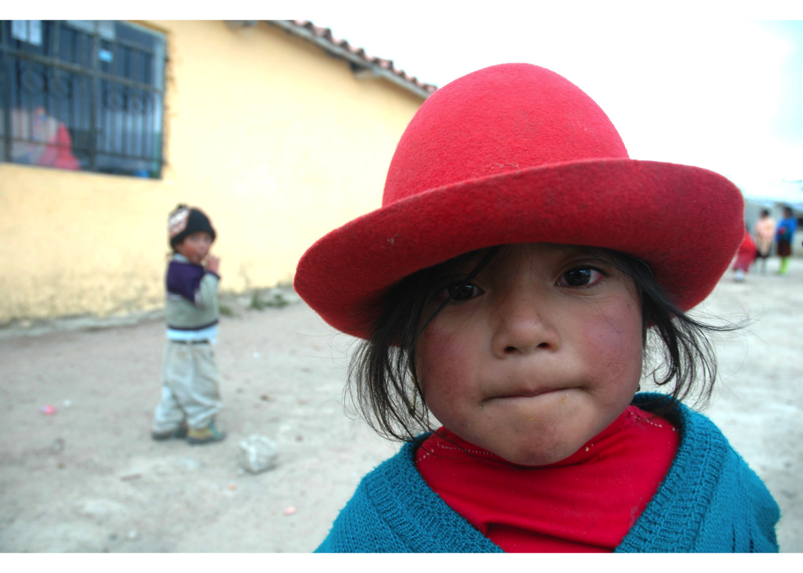
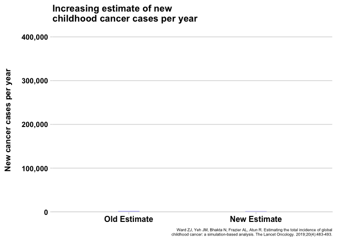
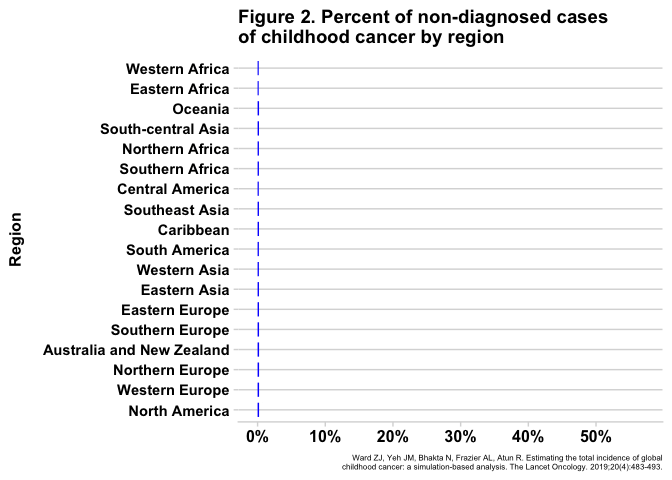
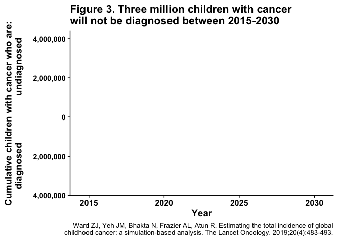

The Global Childhood Cancer Puzzle - Edge 1.1
Global PHO
This is part one of a three part essay about the global burden of childhood cancer. You can find part 2 here and part 3 here.
The Global Oncology Puzzle
Have you ever completed a very difficult puzzle? Perhaps it was thousands of small pieces with colors that blend together, so that most of the pieces appeared very similar. Do you remember the overwhelmed feeling you had when you first dumped the pieces onto the table? “Good grief”, you may have thought, “this puzzle is impossible.” But, after the moment of defeat, you look at the picture on the box and see what the puzzle could be. Perhaps it will be an amazing waterfall, or city illuminated at night, or a basket full of kittens, and you know that at the end of all your hard work the pieces will come together, and the picture will be complete. So, thinking of that future day when you will feel the satisfying snap of the last piece falling into place, you sit down and get to work.
For many people, global pediatric oncology (GPO) is like a giant, overwhelming puzzle. The complexity of the problem and the way the pieces are scattered may leave one feeling lost how to begin. However, despite its difficulty, a community of dedicated doctors, nurses, cancer survivors, parents, politicians, and many others has been working to solve it. Over the last three decades, this community has made considerable progress toward understanding the necessary conditions for successful childhood cancer treatment anywhere in the world. Now, new research has completely changed the perception of childhood cancer as a global health concern.
As a result of this new information, the shape of the puzzle is changing. Whereas before, many pieces had been put together, but there was no structure that unified the whole, now most of the edge pieces are in place, and the outline of the puzzle can be seen in its entirety. The edges have given the puzzle a definite structure, which helps the global oncology community understand both how the different completed parts sit in relation to each other and what important information is still missing.
In a series of essays, I want to present to you a broad understanding of what I’m calling the edges of the GPO puzzle: those essential concepts without which one cannot fully understand pediatric oncology as a global health concern. Concretely, we will review the emerging research that clarifies the magnitude of the problem of childhood cancer, demonstrates effective solutions exist that can save lives today, quantifies the costs associated with treatment, and charts a clear path forward. To discuss the first edge, we will directly address the question, “what is the global burden of pediatric cancer?”
Much of the information in these essays will not be new to people who are involved in the field. Even if he or she hasn’t read the research, much of it is in line with the experience and intuition of the GPO community. If you consider yourself in this group, my hope is that you take from these essays a distilled set of concepts that can serve as visual and viral representations of the field, which you can use to communicate its importance to others.
As for the interested but unfamiliar reader, this information may be surprising. When one sits down at the table to work on the puzzle and looks at the chaos of the scattered pieces, it’s easy to be overwhelmed. This feeling may even be accompanied by belief in the futility of completing the puzzle. I have certainly had the thought that the goal of successfully treating children with cancer anywhere in the world is too complex, too big, and too expensive. It also may be hard to see how you can contribute to completing the puzzle. Being overwhelmed at the problem is understandable, which is why I hope to demonstrate that significant progress has already been made and more lives can be saved, through the GPO community’s tireless efforts in caring for kids, an effort in which anyone can take part
With that said, let’s go tackle the first edge. I’ll address the rest of the edges in future essays.

Edge #1: The Global Burden of Pediatric Cancer
No one would deny that childhood cancer is a terrible disease, and people broadly agree that it is horrible that children have to endure it. However, it is also a rare disease, and one may justly wonder how big a problem it is compared to the many other concerning diseases that confront the global health community. This is a reasonable question that serves as the starting place for constructing a more complete picture of GPO. In this visual essay will ask and answer the question what is the total burden of disease due to pediatric cancer?
Recent research has provided a striking answer to this question, which is: a whole lot more than we previously thought! I’ll explain what this surprising answer means in a minute, but first let me explain why this question is very difficult to answer and why the global cancer community’s understanding of disease burden is changing.
How do you measure cancer burden?
How can we answer this question? Should we count the total number of kids diagnosed with cancer who are alive in the world right now? Or maybe we should only count new cases this year? Maybe we should we look at the total number of deaths due to cancer this year? But what about the kids who develop cancer but are never diagnosed, how do we measure those cases if we don’t directly count them? Also, cancer causes much more suffering than just loss of life. Is there a way to factor in the amount of suffering when trying to quantify the burden of disease? You can see from these questions that the first thing researchers must do is to decide what aspect of cancer burden is worth measuring.
These questions are very difficult for researchers to answer for a single country, and they are even more complex when considering the entire world. To answer these questions correctly, researchers require a large amount of information. It would be nice if complete data about the number of cancer diagnoses or deaths due to cancer were available, but the unfortunate truth is that there are many holes in the available data. Comprehensive data collection requires a large and expensive system, and there are many countries that are limited in their ability to start and maintain one. Other countries track cases diagnosed at different hospitals, but they do not count every hospital and every patient in the country, so their numbers are also incomplete. To make things even more complicated, researchers know that many cases around the world are not even diagnosed, and if they are to produce reliable numbers about the amount of pediatric cancer in the world, then they must be able to measure the cases they know are happening but never identified.
From these problems, you can see that there are two big reasons why quantifying cancer burden is hard to do: 1. We could measure it in different ways that mean different things. 2. We are missing much of the information we need to make good measurements.
Because of these difficulties, estimates of the total burden of childhood cancer have changed over the years. The GPO community has worked hard to improve their methods, and we now have more reliable numbers that tell a very surprising story.
What is the total burden of disease due to pediatric cancer?
As I said above, the answer from our improved estimates is: there is a whole lot more cancer than we previously thought! Let me explain what has changed and why this is so surprising.
The total number of new cases every year
Due to the limitations in measuring cancer burden previously described, the best estimates for how many children from the age 0-14 developed cancer each year was 200,000. The technical term for this measure is incident cases. However, recently researchers developed a new method to estimate incident cases and reported that there are in fact 400,000 children who develop cancer every year. In other words, the previous estimates were half as much as the newer estimate (see figure 1)!
Fig. 1 - Animated

Click for static image

Why are the numbers so different? Part of the reason is the way the researchers calculated the number of cases for countries with missing data by comparing them to the number of cases for countries with really good data differently than previous estimates. Also, with the newer method, researchers were able to better account for the patients who developed cancer but were never diagnosed. Previous methods had trouble estimating this number well, but the new method is much better at it. In fact, the researchers found that about 175,000 kids with cancer are not even diagnosed every year! That means they develop cancer, but either they never seek medical care or the fact that they have cancer is never recognized by healthcare personnel. Another way to look at this number is that more than 4 out of every 10 kids with cancer in the world are never diagnosed.
These numbers summarize what we know about the number of new cases per year for the entire world. We can say that the average proportion of kids who are not diagnosed is 4 out of 10. However, that actual proportion of kids who are not diagnosed in a specific country or regions can be very different. For example, the researchers estimated that in western Africa 57% of cases, almost 6 out of every 10 children with cancer, were never diagnosed and in south Asia it was 5 out of 10 kids. Figure 2 shows the estimates of total number of new cases per year by different region and how many cases are diagnosed and undiagnosed.
Fig. 2 - Animated

Click for static image

As the researchers looked at the trends in proportion of kids who are diagnosed across countries, they noticed that countries that are more economically challenged, labeled as low-income and middle-income countries (LMIC for short), tend to have higher proportions of kids with cancer who are not diagnosed. This is an important fact to notice because 9 out of every 10 kids with cancer in the world live in LMICs! Putting these pieces of evidence together, we can say that the vast majority of children who develop cancer live in countries where they have a high chance of never being diagnosed.
The researchers of this paper didn’t stop with these estimates. They calculate that if the rates for non-diagnosis do not change between 2015 and 2030, then about 3 million children will not receive a diagnosis for their life-threatening disease. 3 million children, most with diseases that can be cured, will never have the opportunity to receive treatment, never have the chance at living a long healthy life, and never even know what was breaking their bodies. This is a daily average around 550 nondiagnosed children with cancer. To put this in perspective, if an average school bus holds 55 kids, then this number is the rough equivalent of 10 school buses filled with children driving away and disappearing every single day for 15 years.
Fig. 3 - Animated

Click for static image

(Technical Note: it is worth pointing out that the numbers mentioned above and below are estimates and there is a degree of uncertainty about them that is not represented in the displayed data. The fact of the matter is that the lack of reliable data leaves a lot of questions. For instance, only 5% of kid in Africa live in countries with comprehensive registries. How do we decide what to do with the remaining 95%? The researches mentioned above had a specific modeling strategy to fill in the gaps, but that is not the only way. For instance the International Incidence of Childhood Cancer (IICC3) has a different methodolgy that produces slightly different numbers. For the purposes of this essay it is sufficient to acknowledge these difference, and continue exploring the estimates the Harvard researchers produced.).
Continue reading:
Part 2
Part 3
Subscribe to my podcast about global PHO at GHCCpod.com